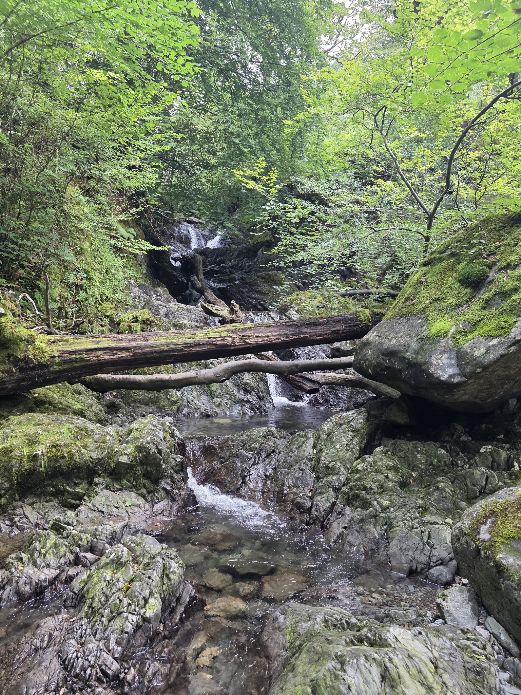
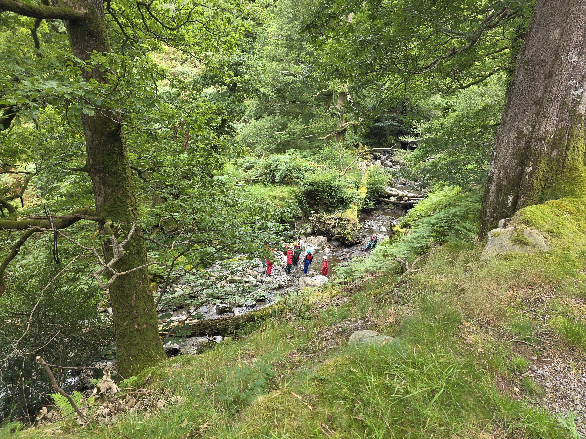

My First Hike
📍 Lake District
🥾 Difficulty: Moderate
📏 Distance: 5 km
Every hike has a story. This is where mine begins.
Favourite Memory
One of my favourite moments from this hike...

Exploring the world, one trail at a time.
Welcome to my hiking journal. Here, I share the trails I've explored, the views I've discovered and the memories I've made.
📍 Lake District
🥾 Difficulty: Moderate
📏 Distance: 5 km
Every hike has a story. This is where mine begins.
One of my favourite moments from this hike...

📍 Black Forest
🥾 Difficulty: Challenging
📏 Distance: 10 km
The forest is a magical place. Every step brings new sights and sounds.
I love this trail!


📍 Snowdonia, Wales
🥾 Difficulty: Challenging
📏 Distance: 9 miles (14.5 km)
Climb one of Wales's most famous mountains and enjoy breathtaking views across Eryri National Park.
Add your favourite memory from Snowdon here.

📍 Dover, Kent, England
🥾 Difficulty: Moderate
📏 Distance: 4 miles (6.4 km)
Explore the beautiful coastal landscape, enjoy views across the English Channel, and experience one of England's iconic walking destinations.
Add your favourite memory from the White Cliffs of Dover here.
📍 Scotland
🥾 Difficulty: Challenging
📏 Distance: Add distance here
A memorable adventure through Scotland's rugged mountain scenery.
Add your favourite memory from this hike here.
Save the details and little moments you want to remember.
🎉 Hike saved — congratulations on another adventure!